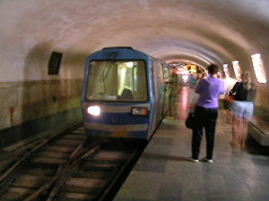
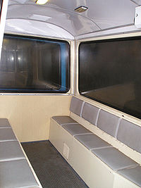
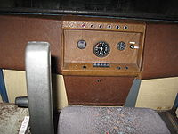

Железная дорога в Новоафонской пещере — открыта 4 июля 1975 года в составе туристического комплекса Новый Афон (Республика Абхазия). Предназначена для доставки туристов в пещеру внутри Апсарской (Иверской) горы во время курортного сезона (с мая по ноябрь). Имеет длину 1,3 км и 3 станции: «Входные ворота», «Зал Апсны» и «Зал Анакопия» (до 1992 — «Зал Тбилиси»).
Из-за подземного расположения эту железную дорогу иногда сравнивают с метрополитеном.

Транспортная система новоафонской пещеры
Для подвоза туристов к пещере к 1975 году была построена транспортная система — тоннель с однопутной электрифицированной железной дорогой (открыта 4 июля 1975). Работает во время курортного сезона с мая по ноябрь. Линия длиной 1291 м имеет 3 пассажирские станции. Перегоны — 816 и 475 м. Поезд проходит их за 3 и 2 мин со скоростью до 30 км/ч. Начальная станция «Входные ворота» эксплуатируется как посадочно-высадочная, промежуточная станция «зал Абхазия» — как высадочная, конечная станция «зал Анакопия» — как посадочная. Линия является однопутной, узкоколейной. Ширина колеи — 914 мм. Депо находится перед начальной станцией — со стороны, противоположной тоннелю к пещере. Двухпутные разъезды имеются в тоннеле около начальной станции и в зале конечной станции. Есть также 2 съезда между начальной и промежуточной станциями: к служебным тоннелю и станции. Небольшой участок рельсового пути перед депо выходит наружу под навесом. Общая длина всех путей — около 2 км. Напряжение в контактном рельсе составляет 300 В.
Штатный пассажиропоток — 0,7 млн человек в сезон, то есть до 2 тыс. в день. На большей части маршрута обделка тоннеля сделана из железобетонных блоков (не метрополитеновского стандарта), часть тоннеля проложена в природной пещере. Строительство метрополитена было осуществлено в 1965—1975 годах тоннельным отрядом № 9 и строительно-монтажным поездом № 212 управления «Тбилтоннельстрой» под руководством Г.Джакели. Применялся буро-взрывной способ.

Интерьер вагона, 2006 год

Кабина головного вагона, 2008 год
Первоначально на пещерной железной дороге использовали состав, переоборудованный из шахтёрских вагонеток. Работающий в настоящее время электропоезд «Турист» был изготовлен по спецпроекту института «ГИПРОуглемаш» Министерства угольной промышленности СССР на Рижском вагоностроительном заводе RVR. Модель контактно-аккумуляторного электропоезда не имеет аналогов. В состав входят 1 моторный, 1 головной и 4 прицепных вагона. Моторный вагон не имеет пассажирских мест. Общая вместимость электропоезда — 90 человек. В 2005 году «Турист» был капитально отремонтрован и модернизирован на московском заводе СВАРЗ. При этом трамвайный контроллер был заменён на современную транзисторную систему управления. В ходе ремонта поезд был перекрашен из жёлтого в голубой цвет.